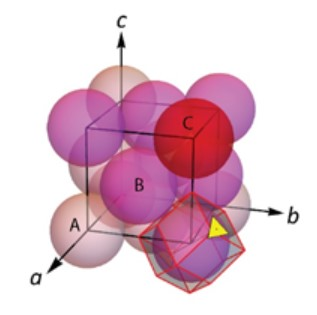
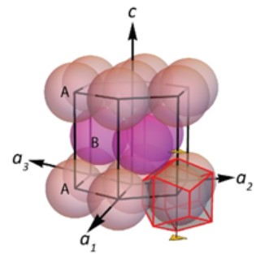
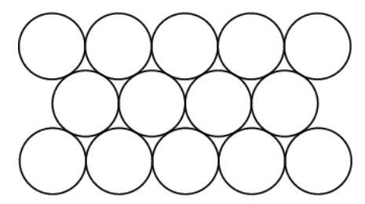
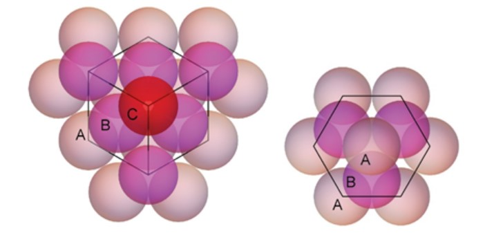
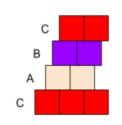
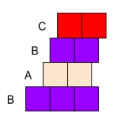
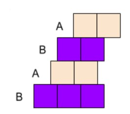

Website and animations by Tamara Puskarevic
In FCC, atoms are organized so that their centers can be connected into the shape of a cube, and each side of the cube bisects an atom as well, like in the figure below:
In HCP, atoms are organized so that their centers can be connected into the shape of a hexagonal prism, like in the figure below:
 Martensitic transformation is the process where crystals with Face Centered Cubic (FCC) lattices get deformed into crystals with Hexagonal Close Packed (HCP) lattices.
Each type of lattice is formed out of layers of hexagonally packed atoms, like in the figure below
FCC lattices are formed from three differently oriented layers (image on the left), while HCP lattices are formed from only two (see image on the right).

The transformation begins with the crystal in its FCC form
The top layers move, so the bottom layer (C) is now in the same orientation as the second layer above it (B)
The topmost layer (C) moves into the same orientation as the layer two layers below it (A)
The transformation ends with the crystal in its HCP form